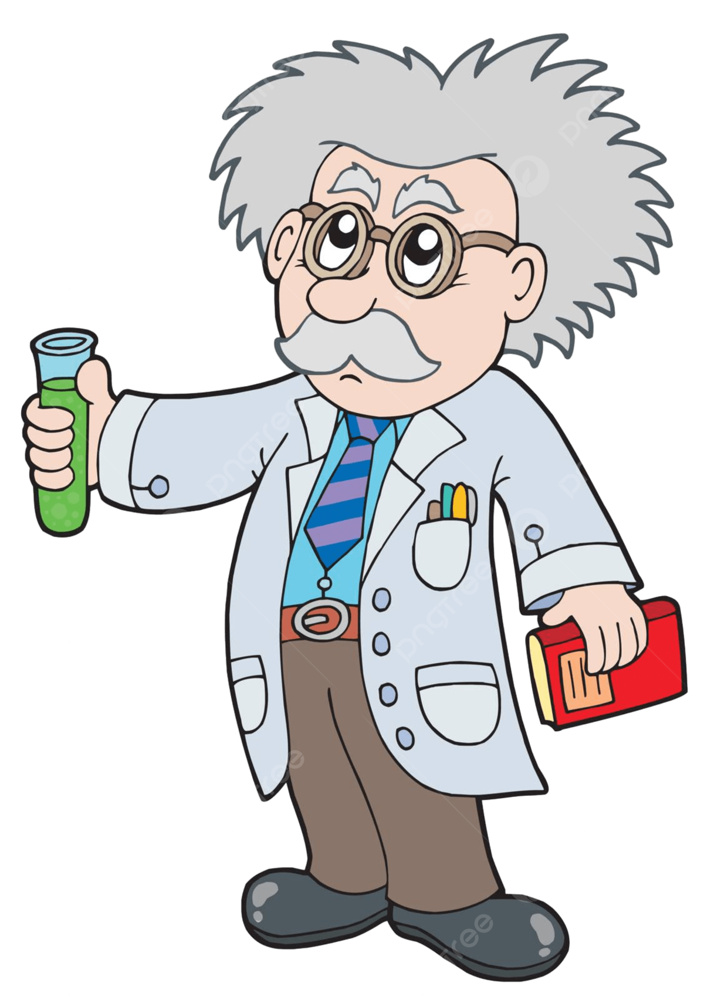

<!DOCTYPE html>
<html lang="pt-BR">
<head>
    <meta charset="UTF-8">
    <meta name="viewport" content="width=device-width, initial-scale=1.0">
    <title>Jogo do Cientista</title>
    <style>
        body, html {
            margin: 0;
            padding: 0;
            overflow: hidden;
        }
    </style>
</head>
<style>
</style>
<body>
    <script>
        // Cria o canvas e o contexto
        const canvas = document.createElement('canvas');
        const ctx = canvas.getContext('2d');
        document.body.appendChild(canvas);

        // Configurações do jogo
        const WIDTH = window.innerWidth;
        const HEIGHT = window.innerHeight;
        const SCIENTIST_SIZE = 30;
        const BACTERIA_SIZE = 20;
        const CURE_SIZE = 20;
        const NUM_BACTERIA = 5;
        const CURE_POINTS = 10;

        canvas.width = WIDTH;
        canvas.height = HEIGHT;

        let scientistX = WIDTH / 2;
        let scientistY = HEIGHT / 2;
        let cureX = Math.random() * (WIDTH - CURE_SIZE);
        let cureY = Math.random() * (HEIGHT - CURE_SIZE);
        let score = 0;

        const bacteria = Array.from({ length: NUM_BACTERIA }, () => ({
            x: Math.random() * (WIDTH - BACTERIA_SIZE),
            y: Math.random() * (HEIGHT - BACTERIA_SIZE),
            dx: (Math.random() - 0.5) * 4, // velocidade horizontal
            dy: (Math.random() - 0.5) * 4  // velocidade vertical
        }));

        // Função para desenhar o jogo
        function draw() {
            ctx.clearRect(0, 0, WIDTH, HEIGHT);

            // Desenha o cientista
            ctx.fillStyle = 'green';
            ctx.fillRect(scientistX, scientistY, SCIENTIST_SIZE, SCIENTIST_SIZE);

            // Desenha o ponto de cura
            ctx.fillStyle = 'red';
            ctx.fillRect(cureX, cureY, CURE_SIZE, CURE_SIZE);

            // Desenha e move as bactérias
            ctx.fillStyle = 'blue';
            bacteria.forEach(bacteriaRect => {
                // Atualiza a posição da bactéria
                bacteriaRect.x += bacteriaRect.dx;
                bacteriaRect.y += bacteriaRect.dy;

                // Verifica colisão com as bordas e inverte o movimento
                if (bacteriaRect.x < 0 || bacteriaRect.x > WIDTH - BACTERIA_SIZE) {
                    bacteriaRect.dx *= -1;
                }
                if (bacteriaRect.y < 0 || bacteriaRect.y > HEIGHT - BACTERIA_SIZE) {
                    bacteriaRect.dy *= -1;
                }

                ctx.fillRect(bacteriaRect.x, bacteriaRect.y, BACTERIA_SIZE, BACTERIA_SIZE);
            });

            // Desenha a pontuação
            ctx.fillStyle = 'black';
            ctx.font = '20px Arial';
            ctx.fillText(`Score: ${score}`, 10, 20);
        }

        // Verifica se dois retângulos se interceptam
        function rectsIntersect(a, b) {
            return a.x < b.x + b.width &&
                   a.x + a.width > b.x &&
                   a.y < b.y + b.height &&
                   a.y + a.height > b.y;
        }

        // Gera uma nova posição para o ponto de cura
        function generateCure() {
            cureX = Math.random() * (WIDTH - CURE_SIZE);
            cureY = Math.random() * (HEIGHT - CURE_SIZE);
        }

        // Verifica colisões com o ponto de cura e bactérias
        function checkCollisions() {
            const scientistRect = { x: scientistX, y: scientistY, width: SCIENTIST_SIZE, height: SCIENTIST_SIZE };
            const cureRect = { x: cureX, y: cureY, width: CURE_SIZE, height: CURE_SIZE };

            // Verifica colisão com o ponto de cura
            if (rectsIntersect(scientistRect, cureRect)) {
                score += CURE_POINTS;
                generateCure();
            }

            // Verifica colisões com as bactérias
            for (const bacteriaRect of bacteria) {
                if (rectsIntersect(scientistRect, { x: bacteriaRect.x, y: bacteriaRect.y, width: BACTERIA_SIZE, height: BACTERIA_SIZE })) {
                    alert(`Game Over! Sua pontuação: ${score}`);
                    window.location.reload(); // Reinicia o jogo
                }
            }
        }

        // Controla o movimento do cientista
        function moveScientist(e) {
            const step = 10;
            switch (e.key) {
                case 'ArrowUp':
                    scientistY = Math.max(0, scientistY - step);
                    break;
                case 'ArrowDown':
                    scientistY = Math.min(HEIGHT - SCIENTIST_SIZE, scientistY + step);
                    break;
                case 'ArrowLeft':
                    scientistX = Math.max(0, scientistX - step);
                    break;
                case 'ArrowRight':
                    scientistX = Math.min(WIDTH - SCIENTIST_SIZE, scientistX + step);
                    break;
            }
            checkCollisions();
            draw();
        }

        // Adiciona o evento para o teclado
        document.addEventListener('keydown', moveScientist);

        // Função para atualizar o jogo a cada quadro
        function update() {
            draw();
            checkCollisions();
            requestAnimationFrame(update);
        }

        // Inicializa o jogo
        update();
    </script>
</body>
<div class="cientista">
     
</div>
</html>